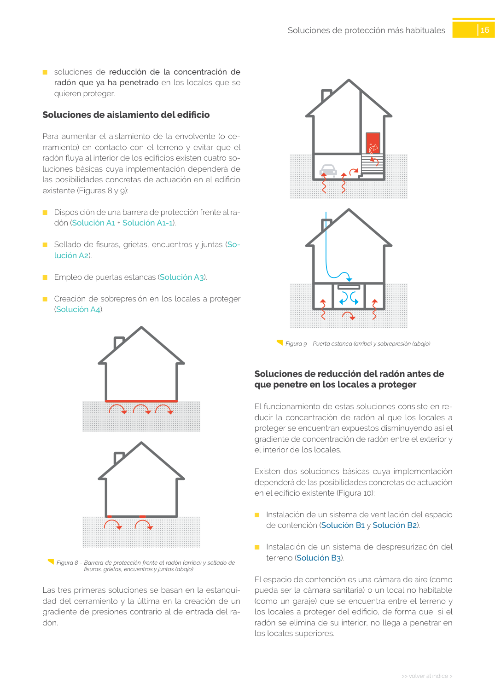

Cita: GUIA · ID técnico a0049 · Capítulo · páginas físicas pág. 15-16 (impresas: ['15', '16'])
Formatos: JSON compacto · Markdown · PDF fuente
Ámbito del documento · texto del ámbito ·
documento y tablas
Capítulo
Tipo: tablas, figuras · nivel 1 · sección estimada: Capítulo · padre:
Capítulo
3
16
>> volver al índice >
Soluciones de protección más habituales
Figura 9 – Puerta estanca (arriba) y sobrepresión (abajo)
Tablas en estas páginas
Página visual
 Página visual 15 (fuente para fórmulas/tablas/figuras)
Página visual 15 (fuente para fórmulas/tablas/figuras)
Página visual 16 (fuente para fórmulas/tablas/figuras)PDF fuente redistribuible: copia fiel enlazada en esta página (SHA256 verificado).